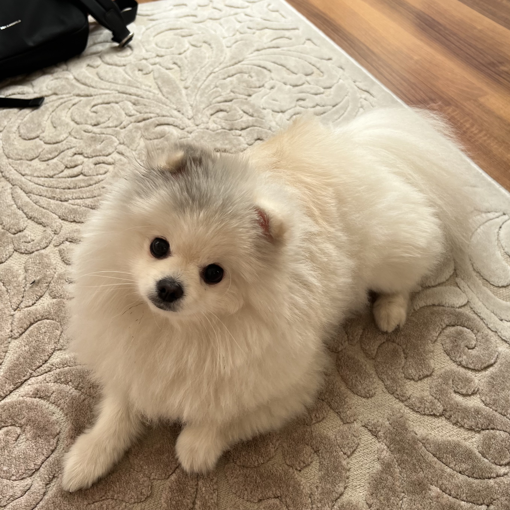

Место учебы
Фундаментальная и прикладная лингвистика,
НИУ ВШЭ, Москва
14.10.2007
Фундаментальная и прикладная лингвистика,
НИУ ВШЭ, Москва
Город, где резной палисад

всем привет!
я родом из вологды, из замечательного города кружева и масла
(да-да, у нас окают, особенно старшее поколение).
конечно, очень сложно жить в москве без наших вкуснейших молочных продуктов.
если у вас когда-нибудь будет возможность попробовать вологодскую молочку, то ни в коем случае не отказывайтесь!
потом просто не сможете без нее жить!
скучаю я не только по вологоше, но и по своему песику Юки🥺 Юки (雪) с японского переводится как снег. вы можете догадаться какого цвета его шерсть)